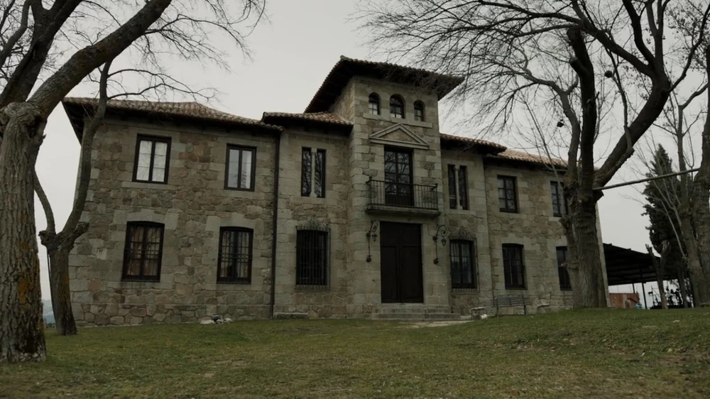

Sergio Marquina plus connue sous le nom du Professeur €
💰
Un personnage fictif, direr de la série espagnol La Casa des Papel.
Dans cette série Sergio Marquina est plus souvent appeller le professeur.
Je vais commencer par vous raconter son enfance :
Sergio Marquina a passé la plupart de son temps dans un lit d'hôpital,
à lire ou écouter les histoires de gangsters que son père lui racontait.
Mais son père fut abbatu aux portes de la banque hispano-américaine.
Et c'est ce jour là que Sergio comprit que les histoires de son père était le véritable vécue de son père.
Et on apprend lors de la série que le personnage de Berlin est le demi-frère ainé que Sergio.
Et il décide d'arreter de ce faire recenser à partir de ses 19 ans.
En avancent dans le temps:
En 2016
Le proffesseur commence à féflechir au bracage de "La Fabrique nationale de la monnaie et du timbre pour cela,
il s'inpire des histoires de son père.
Il commence à réunir son équipe pour le bracage:
Berlin qui est le chef sur le terrain
Tokyo
Rio
Nairobi
Moscou le père de Denver
Denver
Helsinki
Oslo
Si vous voulez en apprendre plus sur les personnage de la casa des papel, je vous invite
à clichez sur le lien en dessous. Les Braqueurs
Le Professeur va réunir son équipe dans une maison, elle est appeller "Maison de Tolède" pour qu'il vient ensemble et apprennent à se connaitre.
Ils vont avoir chaqu'un leur chambre mais la veille du bracage Tokyo va rejoindre Rio car ils ont commencer à sortir ensemble mais en fesant celà ils ont
ignorer la règle la plus importante du professeur qui est pas de realtion amoureuse ou sexuelle entre les membres.
Là voilà si-dessous:

A la fin de se bracage, on déplore la mort d'Oslo, Moscou et Berin.
En 2018
Le professeur reçoit un appel de Tokyo qui lui dit que la police à attrapper Rio.
Le professeur et sa copine qui a prit le nom de Lisbonne.Leur nouvelle cible est la Banque National d'Espagne.
Et ils ont décider de réunir une nouvelle équipe pour un deuxième bracage et récupérer Rio.
Lisbonne qui va être avec le professeur à l'extérieur
Palerme, Le nouveau chef sur le terrain
Tokyo
Rio
Nairobi
Marseille, il est dehors et il sert de couverture au Professeur et Lisbonne
Bogota
Helsinki
Denver, marier à Stockhom
Stockholm, mère de Cincinnati
Si je dit que le Professeur est un personnage Rusé c'est parce que c'est lui qui a tout organiser pour les deux braquage.
Il a également prévue toute les posibilités de problèmes. Pour tromper la police, pour avoir le soutien de la population
et des médias.
Je vous laisse maintenant écouter le chant révolutionnaire 'Bella Ciao' que les braqueurs chante dans la série.
J'espère que je vous ai donner envie de regarder cette série.
Si vous avez aimé le personnage du Professeur, je vous invite à lire le personnage Asène Lupin.
Arsène Lupin